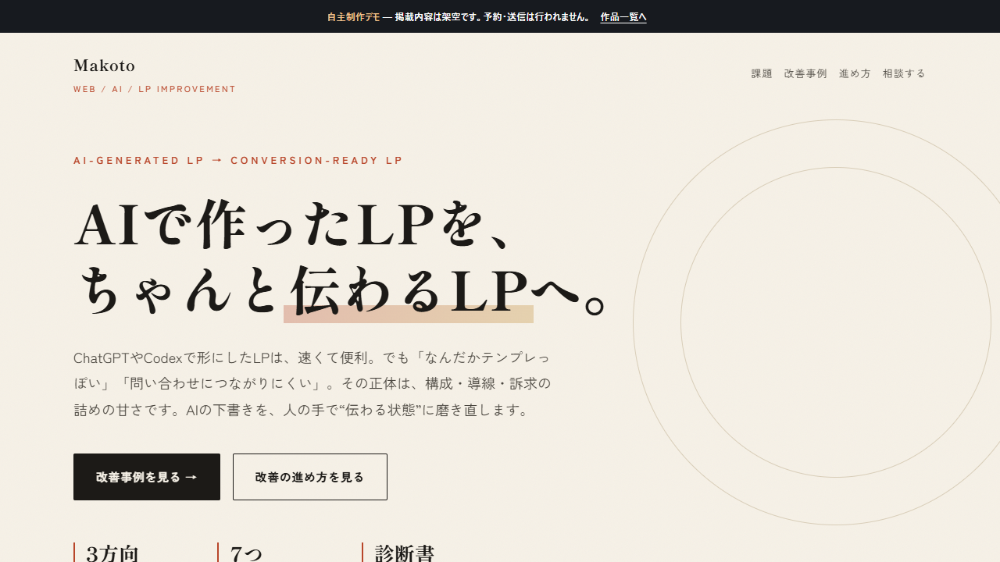
AI生成LP 改善ケーススタディ
AIで作った初稿を、構成・コピー・デザイン・導線の観点から改善する考え方をBefore／Afterで紹介。
ページを見る ↗LANDING PAGE DESIGN & DEVELOPMENT
ヒアリング内容の整理、ページ構成、掲載文章、デザイン、HTML/CSS/JavaScript実装までを想定して制作したデモです。業種ごとに異なる見せ方と、スマートフォンでの読みやすさをご覧いただけます。
SELECTED WORKS
各作品は別タブで開きます。

AIで作った初稿を、構成・コピー・デザイン・導線の観点から改善する考え方をBefore／Afterで紹介。
ページを見る ↗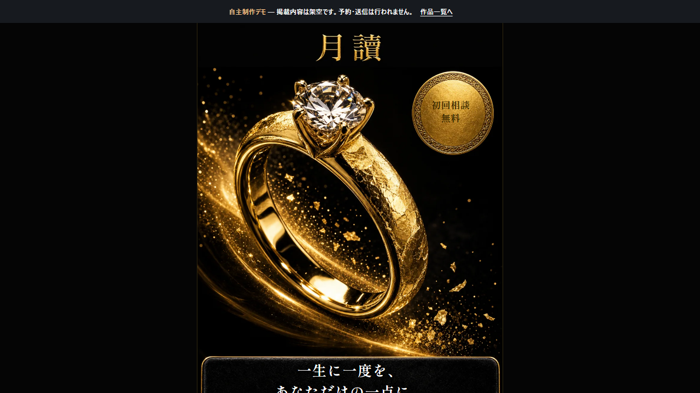
手描きCSSでは出せない箔押しの質感を、AI生成画像の縦スライスで構成。価格とCTAは画像に焼き込まずHTMLで重ね、文言修正に即応できる作り。
ページを見る ↗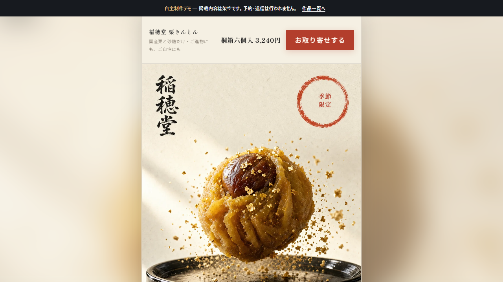
和紙の繊維・筆文字・朱印を活かした和モダンの商品LP。同じ画像LPの手法で、月讀とは正反対のトーンをどこまで作り分けられるかを検証。
ページを見る ↗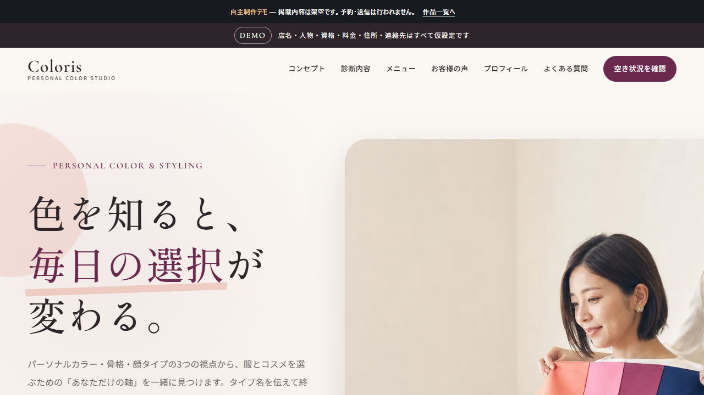
パーソナルカラー・骨格・顔タイプ診断を、上品さと実用性の両面から伝えるサロンLP。
ページを見る ↗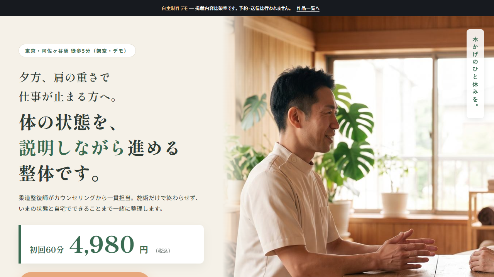
体の状態を丁寧に説明する安心感を軸に、初回相談への不安を減らす地域店舗LP。
ページを見る ↗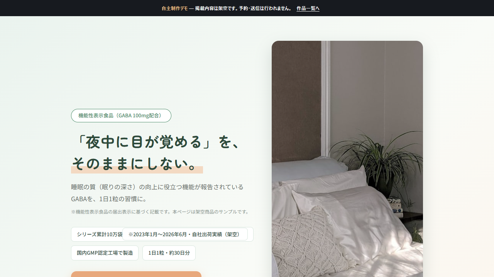
睡眠サポートサプリの特徴を、やさしい配色と生活場面のストーリーで伝える商品LP。
ページを見る ↗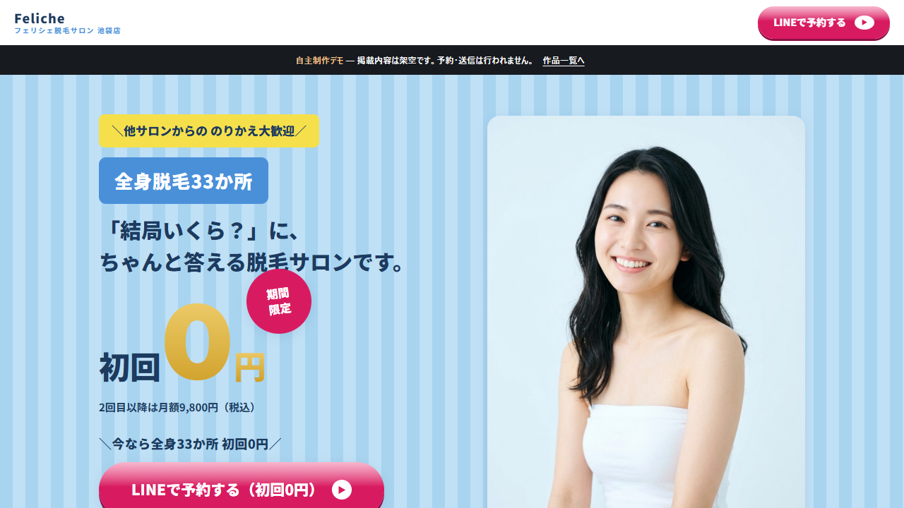
料金・特徴・不安解消をテンポよく配置した、キャンペーン訴求型の脱毛サロンLP。
ページを見る ↗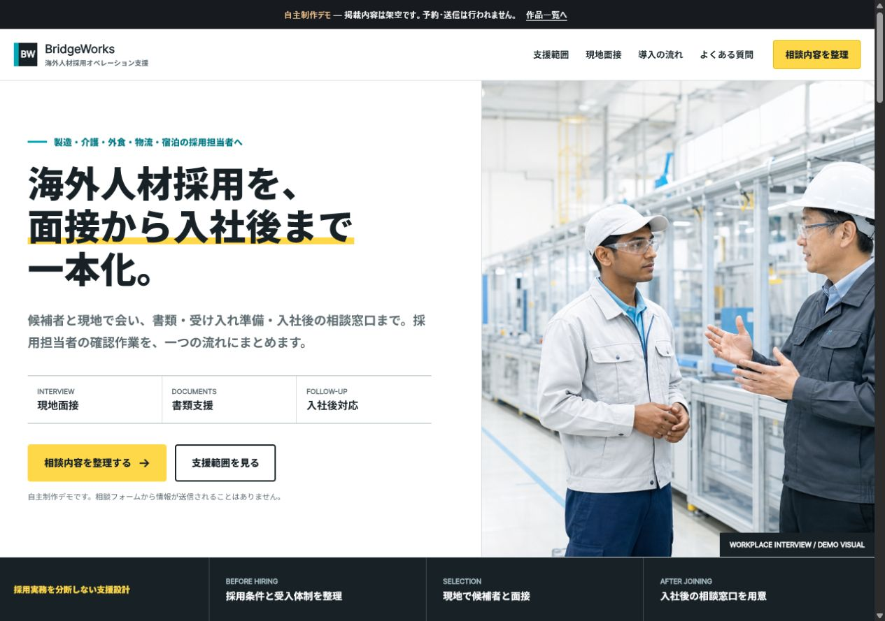
人手不足の課題から、海外現地面接会の仕組みと相談導線までを整理したBtoB向けLP。
ページを見る ↗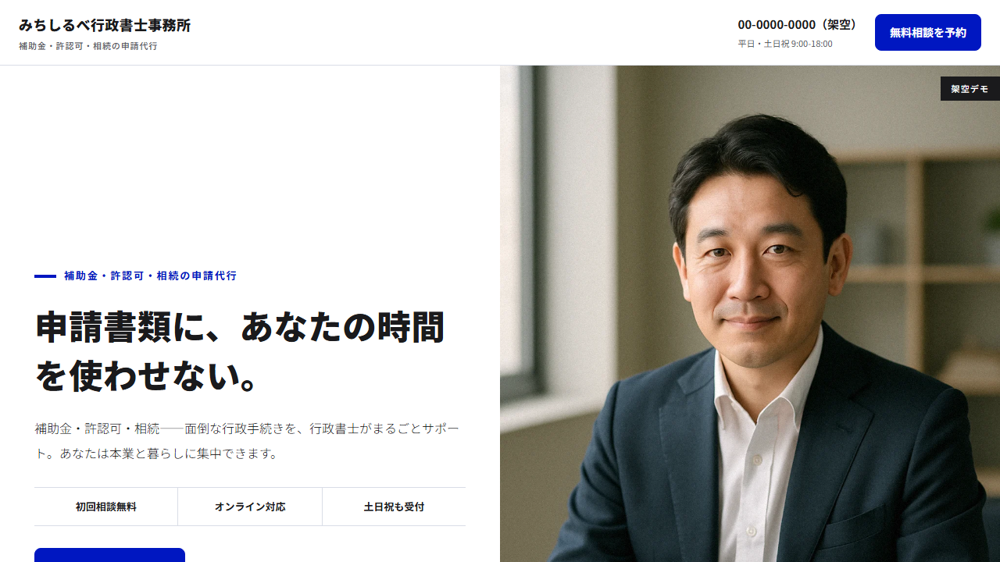
補助金・許認可・相続の相談を予約につなげる士業LP。デジタル庁デザインシステムの公開規約をデザイントークンとして移植し、公共系の誠実なトーンで信頼を伝える構成。
ページを見る ↗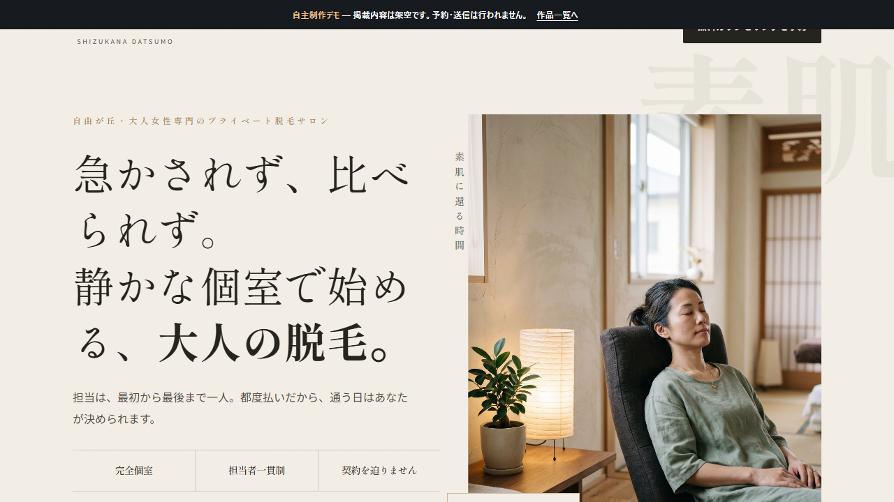
完全個室の静けさと大人向けの安心感を、余白と写真を活かして伝えるエディトリアルLP。
ページを見る ↗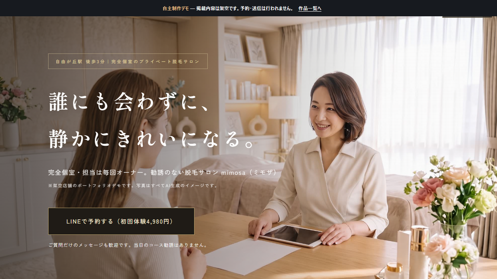
オーナー一貫対応とプライベート感を、高級感のある配色と落ち着いたコピーで表現。
ページを見る ↗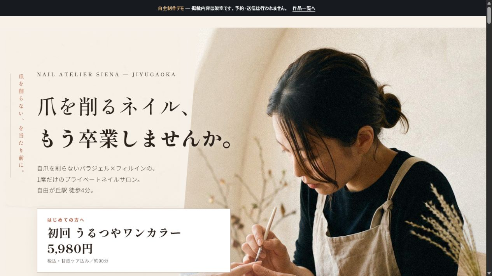
自爪を削らない施術と1席だけの安心感を、メニュー・施術例・予約導線まで丁寧に伝えるネイルサロンLP。
ページを見る ↗SCRIPT SAMPLES
冒頭2〜3分の抜粋と、フル尺の全文サンプルがあります。
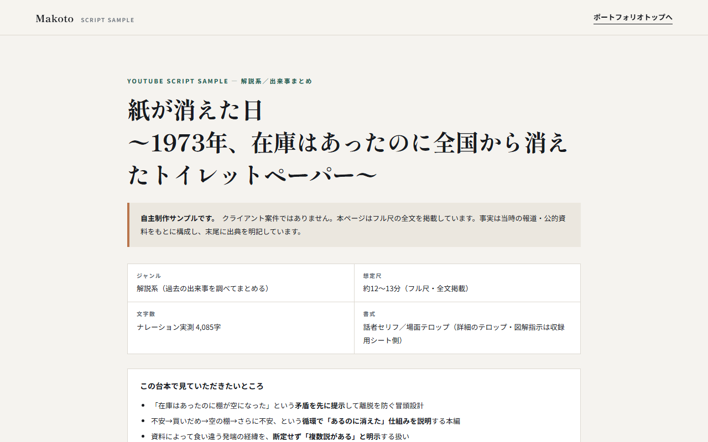
過去の出来事を一次情報から調べてまとめる解説台本。約12〜13分の全文と出典を掲載。資料が食い違う箇所は断定せず併記しています。
台本を読む ↗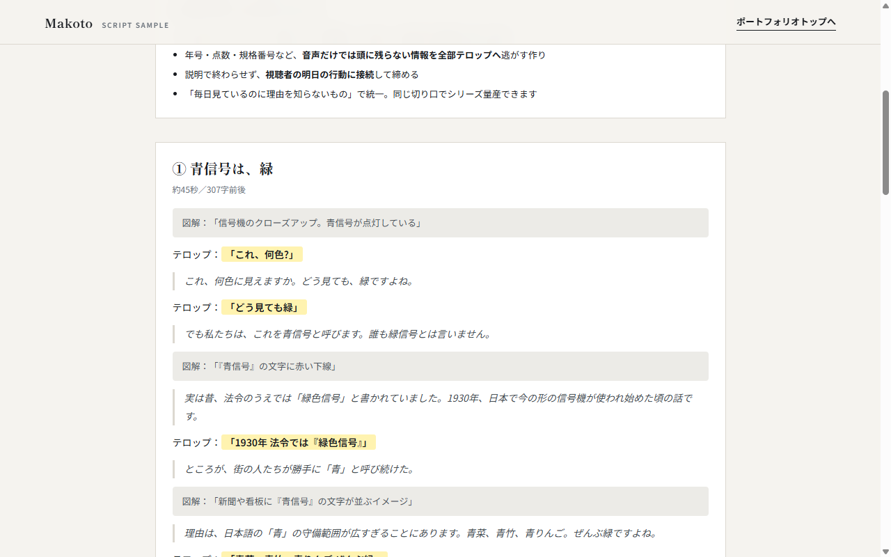
YouTubeショート／TikTok向け縦型台本。冒頭3秒のフック設計と、45秒に収める文字数設計をご覧いただけます。
台本を読む ↗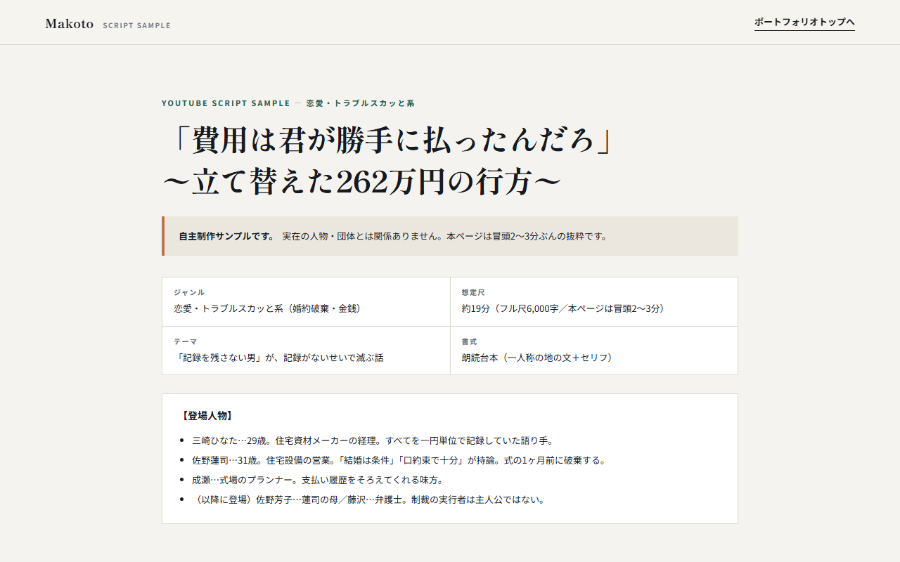
婚約破棄・金銭トラブル系。加害者のセリフで始め、前半の暴言を後半でそのまま返す「逐語返却」で決着させる構成。
台本を読む ↗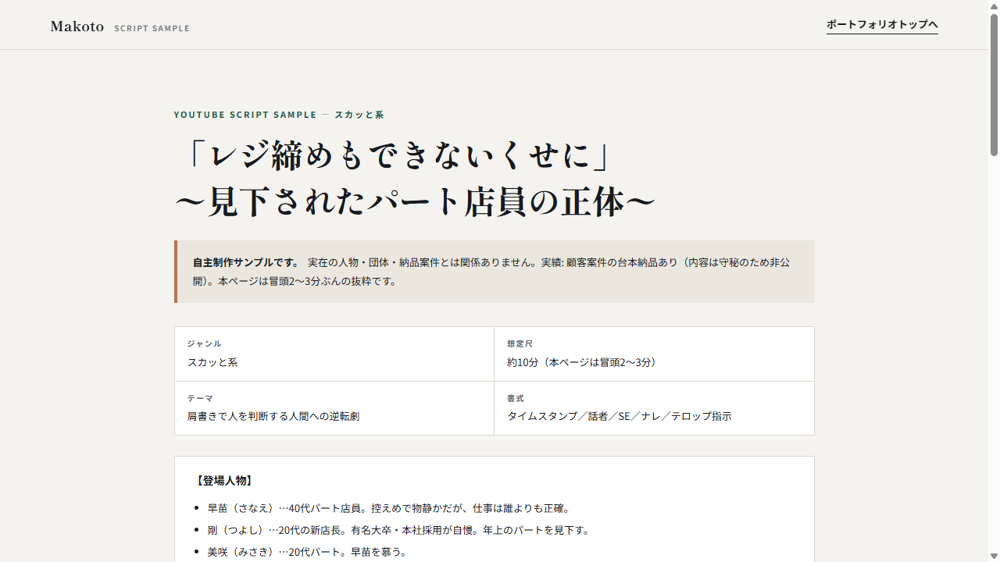
フックの先出し・テロップ/SE指示込みで、撮影しやすい書式に整えたスカッと系台本。
台本を読む ↗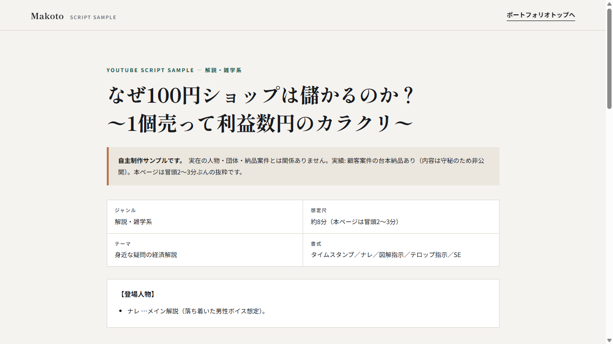
数字フックと図解・テロップ指示で、画作りまで指定する解説系台本。
台本を読む ↗WRITING SAMPLES
構成案・比較表つきで全文を掲載しています。
AUTOMATION TOOLS
Python・Excel/VBAによる自動化の制作実績です。
PRODUCTION SCOPE
誰に何を伝え、どの順番で行動につなげるかを整理します。
業種や対象者に合わせて、文章と視覚表現のトーンを設計します。
HTML/CSS/JavaScriptで、PCとスマートフォンの表示に対応します。